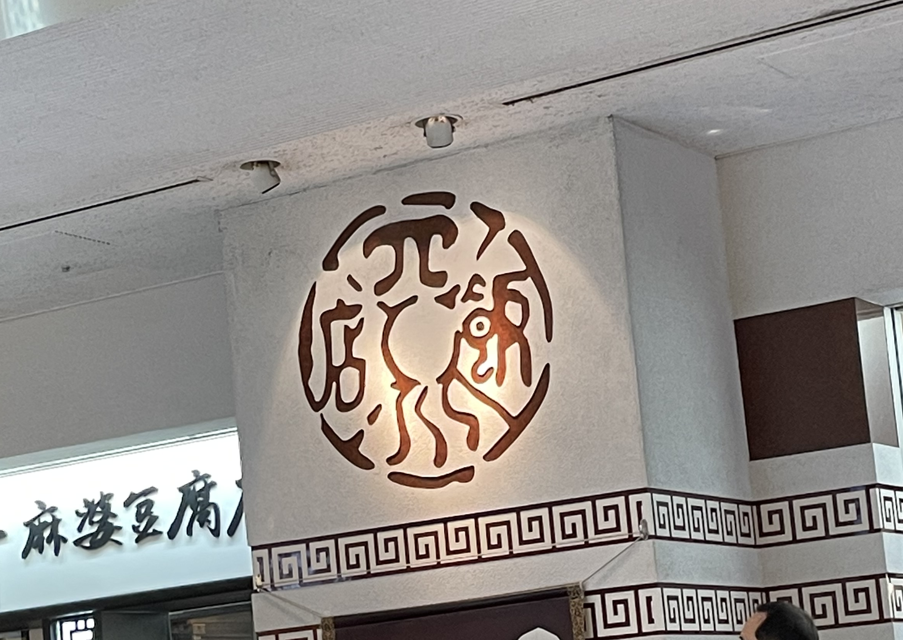

第二回

横浜ランドマークタワー１階の陳建一麻婆豆腐店(2022.10.09)
読めない漢字と初めて見るデザインで最初は何のお店かわからなかった。
東京ミルクソフト 平塚店(2022,08)
どちらも同じ店舗で撮った写真。
二枚目の写真はポスターに近いかもしれないが、大きく中心に載せられたソフトクリームが印象的でお店に立ち寄るきっかけとなったため掲載。
横浜駅のホームで撮ったSoftBankの広告看板(2021.12)
SoftBankの広告だとは知らずに看板に写っているアイドル（なにわ男子）が印象的で撮った写真。
ユニバーサルスタジオジャパンで撮ったおさるのジョージの看板(2021.12)
カラフルな色使いが可愛く印象的だった看板